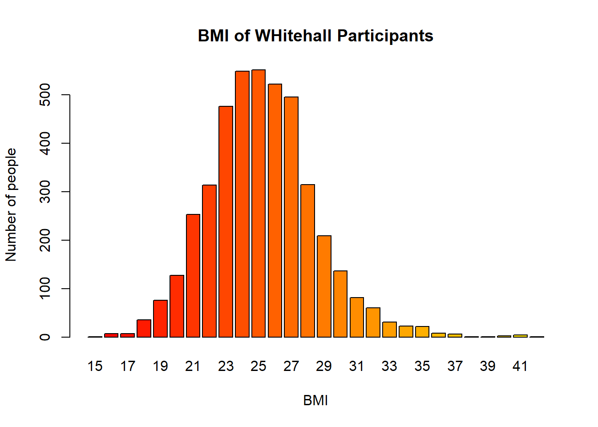
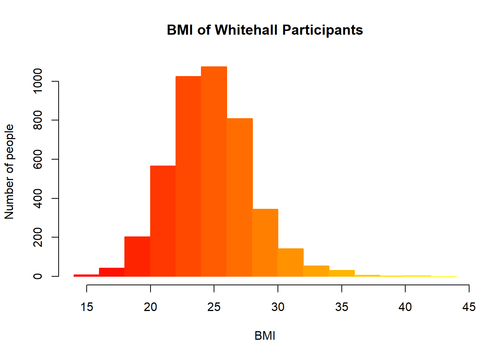
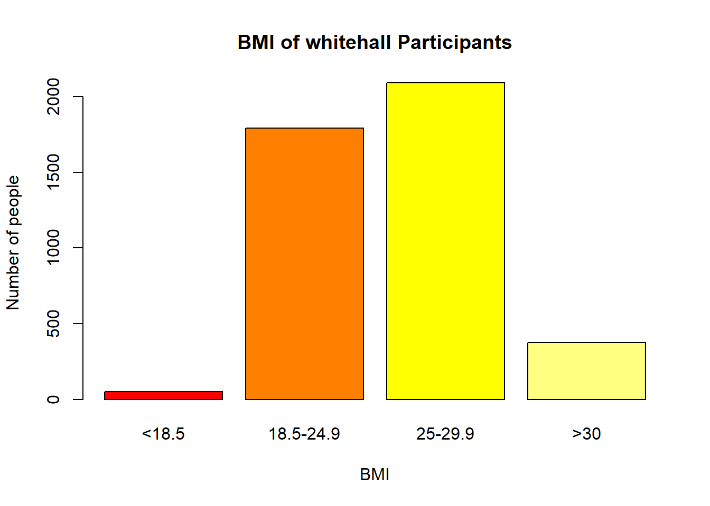
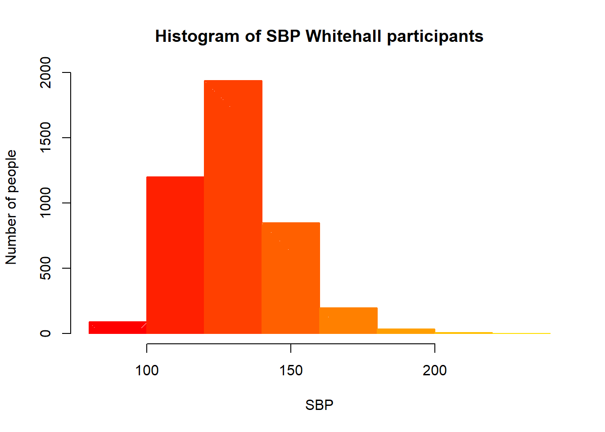

About the Dataset: The Whitehall FoSSA Study is a simulated cohort study similar to the original Whitehall Study of Civil Servants, set up in the 1960s, which followed London-based male civil servants with a view to investigating cardiovascular disease and mortality. Participants from the original Whitehall cohort in the 1960s were flagged for mortality at the Office for National Statistics, which provided the date and cause of all deaths occurring until the end of September 2005. The (simulated) Whitehall FoSSA Study was conducted in 1997 to assess risk factors for cardiac and all-cause mortality in a subset of the original cohort that was still being followed. The Whitehall FoSSA Study contains information on 4,327 individuals that were followed-up from 1997 until 2005, and the variables are summarised in the table below. See Clarke et al. (2007), Arch Intern Med, 167(13) for more details on the real data that inspired this dataset.
Importation of data using the relative file path method, enabled by the here and rio packages in r.
The BMI variable is categorized into four groups, with a summary showing the number of participants in each category and its structure identified as a factor with four levels.
table(whitehall$bmi_grp4) #Creating a Table for BMI groups
1 2 3 4
50 1793 2091 376
str(whitehall$bmi_grp4) #Inspecting structure of the dataset
int [1:4327] 3 3 2 2 2 3 2 3 2 2 ...
A new column was created to categorize participants based on BMI. Initially empty, it was filled with 0 for those with BMI below 30 and 1 for those with BMI 30 or above. This numeric coding was then converted into a factor with two categories, labeling participants as “Not obese” or “obese.”
#Creating a new empty columnwhitehall$bmi.2<- whitehall$bmiwhitehall$bmi.2<-NA#Assigning 0 and 1 based rangeswhitehall$bmi.2[whitehall$bmi<30] <-0whitehall$bmi.2[whitehall$bmi>=30] <-1#Creating categorieswhitehall$bmi.2<-factor(whitehall$bmi.2, labels =c("Not obese","obese"))head(whitehall$bmi.2)
[1] Not obese Not obese Not obese Not obese Not obese Not obese
Levels: Not obese obese
A new column was created to categorize LDL cholesterol levels, coding values ≤4 as 0 and values >4 as 1, then converting it into a factor with the categories “4 or below” and “above 4.”
#Creating new empty column (low density lipoprotein cholesterol level)whitehall$ldl2 <- whitehall$ldlcwhitehall$ldl2 <-NA#Assigning codes to various ldl rangeswhitehall$ldl2[whitehall$ldlc<=4] <-0whitehall$ldl2[whitehall$ldlc>4] <-1#Creating categorieswhitehall$ldl2 <-factor(whitehall$ldl2, labels =c("4 or below", "above 4"))
Descriptive statistics were calculated for the dataset to summarize key variables. Measures of central tendency and spread were obtained for continuous variables such as systolic blood pressure and cholesterol, including mean, median, mode, quartiles, interquartile range, minimum, maximum, and standard deviation. Variables were also inspected for their type and classification, identifying them as binary, continuous, or ordinal, and conversions to numeric were performed where necessary to facilitate analysis.
#Descriptive Statisticssummary(whitehall)
whl1_id age_grp prior_cvd prior_t2dm
Min. :10001 Min. :1.000 Min. :0.0000 Min. :0.00000
1st Qu.:11082 1st Qu.:2.000 1st Qu.:0.0000 1st Qu.:0.00000
Median :12164 Median :2.000 Median :0.0000 Median :0.00000
Mean :12164 Mean :2.328 Mean :0.2491 Mean :0.06009
3rd Qu.:13246 3rd Qu.:3.000 3rd Qu.:0.0000 3rd Qu.:0.00000
Max. :14327 Max. :4.000 Max. :1.0000 Max. :1.00000
prior_cancer sbp bmi bmi_grp4
Min. :0.0000 Min. : 86.0 Min. :15.00 Min. :1.000
1st Qu.:0.0000 1st Qu.:119.0 1st Qu.:23.00 1st Qu.:2.000
Median :0.0000 Median :129.0 Median :25.00 Median :3.000
Mean :0.0758 Mean :130.8 Mean :25.22 Mean :2.648
3rd Qu.:0.0000 3rd Qu.:141.0 3rd Qu.:27.00 3rd Qu.:3.000
Max. :1.0000 Max. :230.0 Max. :44.00 Max. :4.000
NA's :9 NA's :17 NA's :17
hdlc ldlc chol currsmoker frailty
Min. :0.050 Min. :1.050 Min. : 2.24 No :3776 Min. :1.00
1st Qu.:0.820 1st Qu.:2.840 1st Qu.: 4.85 Yes : 545 1st Qu.:2.00
Median :1.050 Median :3.350 Median : 5.47 NA's: 6 Median :3.00
Mean :1.092 Mean :3.367 Mean : 5.51 Mean :2.95
3rd Qu.:1.320 3rd Qu.:3.870 3rd Qu.: 6.15 3rd Qu.:4.00
Max. :3.070 Max. :6.810 Max. :10.77 Max. :5.00
NA's :25 NA's :25 NA's :5
vitd cvd_death death fu_years
Min. : 18.92 Min. :0.0000 Min. :0.0000 Min. :0.03117
1st Qu.: 45.60 1st Qu.:0.0000 1st Qu.:0.0000 1st Qu.:5.98514
Median : 55.70 Median :0.0000 Median :0.0000 Median :7.75754
Mean : 57.39 Mean :0.1514 Mean :0.3527 Mean :6.81234
3rd Qu.: 66.69 3rd Qu.:0.0000 3rd Qu.:1.0000 3rd Qu.:8.50000
Max. :419.89 Max. :1.0000 Max. :1.0000 Max. :8.50000
bmi.2 ldl2
Not obese:3934 4 or below:3441
obese : 376 above 4 : 861
NA's : 17 NA's : 25
by(whitehall, whitehall$age_grp, summary)
whitehall$age_grp: 1
whl1_id age_grp prior_cvd prior_t2dm
Min. :10003 Min. :1 Min. :0.0000 Min. :0.00000
1st Qu.:11013 1st Qu.:1 1st Qu.:0.0000 1st Qu.:0.00000
Median :12110 Median :1 Median :0.0000 Median :0.00000
Mean :12138 Mean :1 Mean :0.2541 Mean :0.04471
3rd Qu.:13252 3rd Qu.:1 3rd Qu.:1.0000 3rd Qu.:0.00000
Max. :14323 Max. :1 Max. :1.0000 Max. :1.00000
prior_cancer sbp bmi bmi_grp4
Min. :0.00000 Min. : 87.0 Min. :16.00 Min. :1.00
1st Qu.:0.00000 1st Qu.:117.8 1st Qu.:23.00 1st Qu.:2.00
Median :0.00000 Median :128.5 Median :25.00 Median :3.00
Mean :0.06824 Mean :129.9 Mean :25.34 Mean :2.66
3rd Qu.:0.00000 3rd Qu.:140.0 3rd Qu.:27.00 3rd Qu.:3.00
Max. :1.00000 Max. :205.0 Max. :41.00 Max. :4.00
NA's :2 NA's :6 NA's :6
hdlc ldlc chol currsmoker frailty
Min. :0.050 Min. :1.150 Min. :2.380 No :728 Min. :1.00
1st Qu.:0.830 1st Qu.:2.880 1st Qu.:4.910 Yes:122 1st Qu.:1.00
Median :1.060 Median :3.340 Median :5.480 Median :2.00
Mean :1.098 Mean :3.368 Mean :5.537 Mean :2.42
3rd Qu.:1.320 3rd Qu.:3.850 3rd Qu.:6.150 3rd Qu.:4.00
Max. :3.070 Max. :6.530 Max. :9.760 Max. :5.00
NA's :6 NA's :5 NA's :4
vitd cvd_death death fu_years
Min. : 22.20 Min. :0.00000 Min. :0.0000 Min. :0.2745
1st Qu.: 50.40 1st Qu.:0.00000 1st Qu.:0.0000 1st Qu.:7.6138
Median : 60.34 Median :0.00000 Median :0.0000 Median :7.9062
Mean : 61.72 Mean :0.05529 Mean :0.1612 Mean :7.5706
3rd Qu.: 69.41 3rd Qu.:0.00000 3rd Qu.:0.0000 3rd Qu.:8.5000
Max. :419.89 Max. :1.00000 Max. :1.0000 Max. :8.5000
bmi.2 ldl2
Not obese:767 4 or below:678
obese : 77 above 4 :167
NA's : 6 NA's : 5
------------------------------------------------------------
whitehall$age_grp: 2
whl1_id age_grp prior_cvd prior_t2dm
Min. :10001 Min. :2 Min. :0.0000 Min. :0.00000
1st Qu.:11112 1st Qu.:2 1st Qu.:0.0000 1st Qu.:0.00000
Median :12193 Median :2 Median :0.0000 Median :0.00000
Mean :12185 Mean :2 Mean :0.2512 Mean :0.06101
3rd Qu.:13281 3rd Qu.:2 3rd Qu.:1.0000 3rd Qu.:0.00000
Max. :14316 Max. :2 Max. :1.0000 Max. :1.00000
prior_cancer sbp bmi bmi_grp4
Min. :0.00000 Min. : 88.0 Min. :15.00 Min. :1.000
1st Qu.:0.00000 1st Qu.:119.0 1st Qu.:23.00 1st Qu.:2.000
Median :0.00000 Median :129.0 Median :25.00 Median :3.000
Mean :0.07266 Mean :131.2 Mean :25.09 Mean :2.634
3rd Qu.:0.00000 3rd Qu.:140.0 3rd Qu.:27.00 3rd Qu.:3.000
Max. :1.00000 Max. :230.0 Max. :41.00 Max. :4.000
NA's :4 NA's :9 NA's :9
hdlc ldlc chol currsmoker frailty
Min. :0.16 Min. :1.050 Min. : 2.240 No :1569 Min. :1.000
1st Qu.:0.83 1st Qu.:2.830 1st Qu.: 4.820 Yes : 233 1st Qu.:1.000
Median :1.04 Median :3.340 Median : 5.430 NA's: 1 Median :3.000
Mean :1.09 Mean :3.363 Mean : 5.495 Mean :2.742
3rd Qu.:1.32 3rd Qu.:3.880 3rd Qu.: 6.110 3rd Qu.:4.000
Max. :2.86 Max. :6.320 Max. :10.770 Max. :5.000
NA's :12 NA's :13 NA's :1
vitd cvd_death death fu_years
Min. : 18.92 Min. :0.0000 Min. :0.0000 Min. :0.08918
1st Qu.: 47.47 1st Qu.:0.0000 1st Qu.:0.0000 1st Qu.:7.24144
Median : 57.97 Median :0.0000 Median :0.0000 Median :7.82297
Mean : 58.73 Mean :0.1143 Mean :0.2812 Mean :7.09217
3rd Qu.: 68.72 3rd Qu.:0.0000 3rd Qu.:1.0000 3rd Qu.:8.50000
Max. :137.00 Max. :1.0000 Max. :1.0000 Max. :8.50000
bmi.2 ldl2
Not obese:1651 4 or below:1434
obese : 143 above 4 : 356
NA's : 9 NA's : 13
------------------------------------------------------------
whitehall$age_grp: 3
whl1_id age_grp prior_cvd prior_t2dm
Min. :10004 Min. :3 Min. :0.0000 Min. :0.00000
1st Qu.:11080 1st Qu.:3 1st Qu.:0.0000 1st Qu.:0.00000
Median :12096 Median :3 Median :0.0000 Median :0.00000
Mean :12141 Mean :3 Mean :0.2498 Mean :0.06685
3rd Qu.:13206 3rd Qu.:3 3rd Qu.:0.0000 3rd Qu.:0.00000
Max. :14327 Max. :3 Max. :1.0000 Max. :1.00000
prior_cancer sbp bmi bmi_grp4
Min. :0.00000 Min. : 87.0 Min. :16.00 Min. :1.000
1st Qu.:0.00000 1st Qu.:118.0 1st Qu.:23.00 1st Qu.:2.000
Median :0.00000 Median :129.0 Median :25.00 Median :3.000
Mean :0.08171 Mean :130.8 Mean :25.26 Mean :2.647
3rd Qu.:0.00000 3rd Qu.:141.0 3rd Qu.:27.00 3rd Qu.:3.000
Max. :1.00000 Max. :230.0 Max. :44.00 Max. :4.000
NA's :2 NA's :2 NA's :2
hdlc ldlc chol currsmoker frailty
Min. :0.210 Min. :1.110 Min. :2.640 No :954 Min. :1.000
1st Qu.:0.810 1st Qu.:2.810 1st Qu.:4.850 Yes :121 1st Qu.:2.000
Median :1.060 Median :3.365 Median :5.500 NA's: 2 Median :3.000
Mean :1.092 Mean :3.377 Mean :5.523 Mean :3.235
3rd Qu.:1.320 3rd Qu.:3.862 3rd Qu.:6.180 3rd Qu.:4.000
Max. :2.540 Max. :6.810 Max. :9.870 Max. :5.000
NA's :5 NA's :5
vitd cvd_death death fu_years
Min. : 20.91 Min. :0.0000 Min. :0.0000 Min. :0.03117
1st Qu.: 43.82 1st Qu.:0.0000 1st Qu.:0.0000 1st Qu.:4.90797
Median : 54.60 Median :0.0000 Median :0.0000 Median :7.64918
Mean : 55.55 Mean :0.1996 Mean :0.4364 Mean :6.46223
3rd Qu.: 64.07 3rd Qu.:0.0000 3rd Qu.:1.0000 3rd Qu.:8.50000
Max. :311.06 Max. :1.0000 Max. :1.0000 Max. :8.50000
bmi.2 ldl2
Not obese:976 4 or below:861
obese : 99 above 4 :211
NA's : 2 NA's : 5
------------------------------------------------------------
whitehall$age_grp: 4
whl1_id age_grp prior_cvd prior_t2dm prior_cancer
Min. :10002 Min. :4 Min. :0.0000 Min. :0.000 Min. :0.00000
1st Qu.:11140 1st Qu.:4 1st Qu.:0.0000 1st Qu.:0.000 1st Qu.:0.00000
Median :12251 Median :4 Median :0.0000 Median :0.000 Median :0.00000
Mean :12181 Mean :4 Mean :0.2345 Mean :0.067 Mean :0.08543
3rd Qu.:13204 3rd Qu.:4 3rd Qu.:0.0000 3rd Qu.:0.000 3rd Qu.:0.00000
Max. :14326 Max. :4 Max. :1.0000 Max. :1.000 Max. :1.00000
sbp bmi bmi_grp4 hdlc
Min. : 86.0 Min. :16.00 Min. :1.000 Min. :0.180
1st Qu.:118.0 1st Qu.:23.00 1st Qu.:2.000 1st Qu.:0.820
Median :129.0 Median :25.00 Median :3.000 Median :1.050
Mean :130.5 Mean :25.33 Mean :2.675 Mean :1.090
3rd Qu.:141.0 3rd Qu.:27.00 3rd Qu.:3.000 3rd Qu.:1.325
Max. :198.0 Max. :40.00 Max. :4.000 Max. :2.740
NA's :1 NA's :2
ldlc chol currsmoker frailty vitd
Min. :1.060 Min. :2.520 No :525 Min. :1.000 Min. : 20.49
1st Qu.:2.835 1st Qu.:4.810 Yes : 69 1st Qu.:3.000 1st Qu.: 38.86
Median :3.360 Median :5.490 NA's: 3 Median :4.000 Median : 48.42
Mean :3.362 Mean :5.496 Mean :3.819 Mean : 50.50
3rd Qu.:3.865 3rd Qu.:6.170 3rd Qu.:5.000 3rd Qu.: 59.15
Max. :6.040 Max. :8.820 Max. :5.000 Max. :139.77
NA's :2
cvd_death death fu_years bmi.2
Min. :0.0000 Min. :0.0000 Min. :0.06271 Not obese:540
1st Qu.:0.0000 1st Qu.:0.0000 1st Qu.:3.43643 obese : 57
Median :0.0000 Median :1.0000 Median :6.03797
Mean :0.3132 Mean :0.6901 Mean :5.51926
3rd Qu.:1.0000 3rd Qu.:1.0000 3rd Qu.:7.81324
Max. :1.0000 Max. :1.0000 Max. :8.50000
ldl2
4 or below:468
above 4 :127
NA's : 2
#Converting the class for cholesterol to numericwhitehall$chol <-as.numeric(whitehall$chol)#DescTools for Modelibrary(DescTools)
Warning: package 'DescTools' was built under R version 4.4.3
Mode(whitehall$chol, na.rm=TRUE)
[1] 5.07
attr(,"freq")
[1] 35
#Maximym and Minimum valuesmax(whitehall$chol, na.rm=TRUE)
[1] 10.77
min(whitehall$chol, na.rm=TRUE)
[1] 2.24
#Standard Deviationsd(whitehall$chol, na.rm=TRUE)
[1] 1.00712
Visualizations were created to explore the distribution of key variables in the dataset. BMI was represented using both bar plots and histograms to show the number of participants across individual values and grouped categories, with color gradients enhancing visual distinction. BMI was also grouped into standard categories, and a corresponding bar plot highlighted the frequency of participants in each BMI range. Similarly, systolic blood pressure (SBP) was categorized into clinical groups, from normotensive to stage 2 hypertension, and visualized with histograms to examine its distribution. Different bin widths were used in SBP histograms to provide both detailed and broader views of the data. Overall, these plots allow a clear visual summary of participant characteristics and the spread of measurements.
library(tidyverse)
Warning: package 'tidyverse' was built under R version 4.4.3
Warning: package 'ggplot2' was built under R version 4.4.3
Warning: package 'tibble' was built under R version 4.4.3
Warning: package 'tidyr' was built under R version 4.4.3
Warning: package 'readr' was built under R version 4.4.3
Warning: package 'purrr' was built under R version 4.4.3
Warning: package 'dplyr' was built under R version 4.4.3
Warning: package 'stringr' was built under R version 4.4.2
Warning: package 'forcats' was built under R version 4.4.3
Warning: package 'lubridate' was built under R version 4.4.3
── Attaching core tidyverse packages ──────────────────────── tidyverse 2.0.0 ──
✔ dplyr 1.1.4 ✔ readr 2.1.5
✔ forcats 1.0.0 ✔ stringr 1.5.1
✔ ggplot2 3.5.1 ✔ tibble 3.2.1
✔ lubridate 1.9.4 ✔ tidyr 1.3.1
✔ purrr 1.0.4
── Conflicts ────────────────────────────────────────── tidyverse_conflicts() ──
✖ dplyr::filter() masks stats::filter()
✖ dplyr::lag() masks stats::lag()
ℹ Use the conflicted package (<http://conflicted.r-lib.org/>) to force all conflicts to become errors
library(RColorBrewer)bmi.counts <-table(whitehall$bmi)whitehall$bmi <-as.numeric(whitehall$bmi)#BMI Bar Plotbarplot(bmi.counts, xlab ="BMI", ylab ="Number of people", main ="BMI of WHitehall Participants", col=heat.colors(40))

hist(whitehall$bmi, xlab ="BMI", ylab ="Number of people", main ="BMI of Whitehall Participants", col=heat.colors(20), density=150)

#Creating a new empty BMI Columnwhitehall$bmi.grouped <-NA#Grouping Body Mass Indexwhitehall$bmi.grouped [whitehall$bmi<18.5] <-0whitehall$bmi.grouped[whitehall$bmi>=18.5& whitehall$bmi<25] <-1whitehall$bmi.grouped[whitehall$bmi>=25& whitehall$bmi<30] <-2whitehall$bmi.grouped [whitehall$bmi>=30] <-3class(whitehall$bmi.grouped)
This bar plot shows BMI categories for the Whitehall cohort. Very few participants are underweight (<18.5). Most fall in the healthy (18.5–24.9) and overweight (25–29.9) ranges, with the overweight category being the largest. A smaller but notable group has obesity (BMI >30).
#Creating Categorieswhitehall$bmi.grouped <-factor (whitehall$bmi.grouped, levels =0:3, labels=c("<18.5", "18.5-24.9", "25-29.9", ">30"))#Visualizing the data using bar plotbmi.grouped.graph <-table(whitehall$bmi.grouped)barplot (bmi.grouped.graph, horiz =FALSE, xlab ="BMI", ylab ="Number of people", main ="BMI of whitehall Participants", col=heat.colors(4))

The first histogram uses many small bins, creating a detailed and jagged shape that closely follows the distribution of systolic blood pressure. It shows a clear peak around 125 to 135 mmHg with long tails, but the fine bins make the plot look noisy.
The second histogram uses fewer and wider bins, giving a smoother and more aggregated appearance. The overall pattern is the same, with most values between 120 and 150 mmHg and fewer very low or high readings, but the broader bins make the distribution
#Plotting a histogram of systolic blood pressurehist(whitehall$sbp, xlab ="SBP", ylab ="Number of people", main ="Histogram of SBP of Whitehall Participants", col=heat.colors(12), density=100, breaks =1000)
#Plotting histogram of systolic blood pressure with larger binshist(whitehall$sbp, xlab ="SBP", ylab ="Number of people", main ="Histogram of SBP Whitehall participants", col=heat.colors(12), density=100, breaks =10)

Calculation of standard errors, standard deviations and confidence intervals